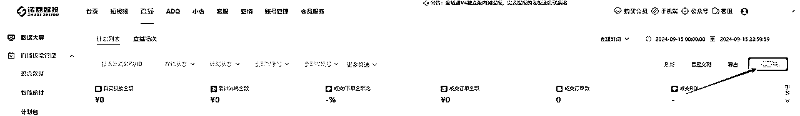
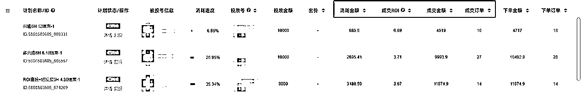

来源：https://gjoli5kpqu.feishu.cn/docx/KiAbdwt1yosVSMxDhsecCWkynbh
大家好，我是牛公子。
我是视频号第一批实战玩家，投放累计消耗过亿，打出过4个亿的播放量，单月GMV破过千万，生鲜类目头部。目前有三家公司，主营业务是直播电商，IP孵化，达人专场操盘。
今天主要想跟大家分享一下，视频号微信豆投素材进直播间的实操方法。
做投素材以来，我一路做到类目头部，把公司开到了微信总部，首次操盘达人专场投放出409万成交额，近期操盘口播单品投流19天打出100万，roi持续达到3以上。
今天是我公司在广州微信总部开业的日子，感慨万千，千言万语汇成一句：感谢这个时代，感谢生财有术！提笔写下这篇文章，献给我在生财有术的这四年创业时光。
回想起刚入局视频号时，生财许多大佬的分享帮我避开了很多坑，今天这个值得纪念的日子，我也想留下一篇文章，分享给生财圈友们，希望给想在视频号做投流的圈友们一些思考与启发。
视频号直播板块，是从 20 年开始的，到现在有好几个重大的变化。
我们看起来它是一个单一的直播平台，比如说大家会拿抖音直播或者说淘宝直播来和视频号对比。但是现在它正在转变，逐渐跟微信深度结合，背靠着微信，这个月活 13 亿的国民级的APP。
那其实视频号直播，已经不是一个单独拎出来的直播平台了，我们需要理解的是，它是微信生态里面，跟用户发展更多关系的一个媒介。
所以从现在开始，我们在分析视频号这个产品的时候，其实就是要站在整个微信的链路来分析。
包括后面视频号会打通跟公众号、小程序、群、朋友圈、 1V1 的聊天、搜一搜、听一听、看一看等等微信相关产品的链接。这时候就真正成为整个微信生态的事情了。所以直播其实相当于做的是整个微信生态，跟用户产生更多关联的一个形态。
我看好视频号，正是因为此。
我做的是微信豆投素材，目前来看，微信豆的人群，只是视频号的人群。但是后面，不久的将来，视频号跟微信的生态全部打通之后，流量池子会更大。
当整个微信生态打通联动起来，在小程序购买的用户、公众号购买的用户，标签是什么样的，等等数据，都会知晓。而一旦数据打通，要探索的精准人群就会更多，池子会更大。
视频号直播，不单独来看，而是嵌入微信生态，会发现可做的很多，也很有机会能放大。
我是从22年开始做视频号的。开始的时候做短视频混剪，后来开始做无人、半无人直播。到后面平台全面打压半无人和无人直播，就开始一比一复刻半无人直播，来做纯自然流的直播间，那个时候一个月也能做个 300 万的GMV。
大概是到了23年的时候，开始觉得自然流还是有一些短板，因为自然流的不可控因素太大，特别考验主播人货场，很难复制放大，就开始转为借助付费流。
一开始打的是直投，打了大概几个月的时间。发现直投扩不了量，每天好的话也就打个十多万。
后面我们就尝试着去做素材投放，大概磨了几十个素材后，我们终于把爆款素材打爆了，也经过一个月的打磨，彻底把投放素材的方法论彻底摸索出来。
爆款方法论测试出来后，第三场直接拉爆了。
而且我们的方法论也在不同的账号上得到了论证，纯新号我们也可以当场拉爆。
后面通过这套投放方式，我们也把一个单品做到了月销破千万。
目前大部分视频号付费流还是以直投为主，微信豆投素材还处在红利期。
我为什么更倾向于做投素材呢？
下面展示一下，投素材和直投的差距。
| 投流方式 | 优点 | 缺点 | 适合人群 |
|---|---|---|---|
| 直投 | 1.对内容要求相对低一些 | 1.目前阶段： | 其实直投和投素材，并没有限定说适合什么人。 |
| 投素材 | 1.门槛相对低一些，对于人货场要求不是很高 | 1.重内容，对内容能力要求高 |
投素材确实还是比较香的，效果也不错，在直投遇到瓶颈的话，真的很建议大家试一试投素材。目前我们还是会投放素材+加点直投去打，素材跑起来后直投的roi也会被带起来。😂
目前从视频号整个直播端的生态来看，人群购买标签的颗粒度是比较浅的，并不精细，直播间进来的人购买意愿并不是特别强，目前人群还不是很精准。
而且目前投放端的商业流量和自然流流量都是在同一个池子里面，今年大家应该都会发现自然流有时候要比付费流量更加精准，其实你买的流量也是自然流池子的流量。
这个时候我们就需要通过直播，用憋单的形式对用户教育，叫做“洗标签”或者“洗用户”，然后再进行流量的转化，而结合平台的流量推送算法，我们要把直播脚本节奏控制在10-15分钟。然而对于主播的要求也挺高的，要有流量的感知能力和控场能力，在流量的节点做相对应的数据补充，持续的让直播间流量更加稳定。
1）主播吸引力不够，观众停留时间短。
直播对于人货场考验特别大，视频号也是一个比较看人的平台，人设在视频号超级吃香，解决了用户的信任问题，不难发现，在视频号播的好的主播，大多数都是比较朴实，长着一张国泰民安脸，三十多岁的女性要比二十多岁的女性更加有信任感，在直播间的人物突出更佳有说服力。
2）好的场景也能够拉爆直播间
直播间更为直观的去看我们的场景好坏就是我们的直播点击进入率。但是点击越高流量越泛，那么平台考核的是外层曝光的三秒停留，和内层曝光的三秒停留，从而在用户端能够吸引停留再点进直播间那肯定是场景+人，而不是货。
那么吸引进来的人能留得住实时进入的流量肯定是场景+货，好的场景也是一个钩子。
相比直播，短视频的流量要比直投流量精准很多，能进入直播间的流量已经全部被短视频洗过了，流量特别精准，可以拉升我们整个直播间的转化率。
短视频端流量洼地和直播端的流量洼地是分开的，短视频端分的是流量赛马池，越高的播放量的流量赛马池竞争越小，从而我们知道了短视频流量池的底层逻辑我们可以快速的通过计划投放直接把流量池打穿掉。
好的人货场可以让素材跑的更加长久，投产更加稳定，通过直播的双频共振实现流量最大化，快速的拿到更大的量级。
爆款素材的点击进入率都是在2%以上才算是及格。
现在平台不够完善，打素材的难点在于不确定因素太多，很多人能打素材都是靠天吃饭。
唯一能突破的点就是：多测试，把基数放大，增加成功概率。
①多组素材，多组计划，轮番测试，筛选出高质量，能爆量的素材。
②讲故事的素材转化率高——通过混剪的形式，可以把多个故事线植入到自己的产品里面去。
①一旦出现爆款，一定要用同脚本裂变素材，把流量吃透。
②爆过的素材脚本，过一段时间还是可以继续爆量。现在平台处于增量期，每过一段时间，都有新流量涌入进来。我们一个爆款素材打了快一年了，持续爆量。
投放之前咱们肯定得了解咱们的产品ROI盈亏平衡情况保本roi是多少
A.通过观众放量计划筛选出有消耗的素材，再通过成交计划快速去测试出爆款素材。
投观众的计划流量会很泛，会拉低整体的转化数据，但是流量非常便宜，我们的目的就是以最便宜的流量筛选出有消耗的素材；
观众放量计划：
预算：200-500
时长：2-3小时
性别：根据品类定
年龄：31以上
兴趣：不锁
测素材，测出价（低成本）每天的出价都会有浮动
B.如果预算有限或者单品利润比较低，又想直接了当的情况下：可以先按成交计划分出价小额多笔去测，测出能消耗的素材，因为以上A的观众放量计划，你素材有消耗不一定后面投成交计划就有消耗，其主要目前还是让它跑播放量后去建模更容易。所以你想直接点，你就直接投成交计划，并实时看它的直播间进入率以及计划的消耗程度和ROI情况，可以的话可以领出来单独投或者跟有消耗的素材一起投。
成交出价计划：
预算：500-800
时长：2-3小时
性别：不限
年龄：31以上
兴趣：不锁
比如有消耗，roi很低的情况下，可以去锁性别跟兴趣，人群圈精准点再去测试一下消耗程度以及roi情况怎样，如果可以的情况下，就持续去打，前期新素材是需要建模，前期可能roi很低，后面因为素材有成交，有标签人群了，它投产可能会持续上去。
① 新号
当新号前期采取高举高打的情况下，可以按照客单价的50%—70%去测，看消耗程度，如果计划的消耗程度在80-100%的话，后续搭建的计划可以持续往下降1-2块，降完发现还是这样的消耗程度的话，后面搭建继续降，压到利润的70%-80%即可采取放量，一直铺计划了，注意自己观察，因为计划铺太多会出现抢量或者拥挤，导致全部计划不烧，你可以试一试大概搭建几条计划，它的预算要多少和消耗速度是最快的，就以那种方式去放量。
②老号
用现有的投放户去压价——周期会比较长，可以采取短时2-3小时的计划，出现猛消耗投产过低，要及时的去压低出价； 猛消耗：1.就是出价过高的提示，2.就是你计划跑飞了，你可以观察下，你之前计划的消耗金额多少能进多少人，然后消耗大概多少能进多少人，看看成本啥的是不是不对劲做出判断。
采取新户轮换形式快速降低出价：以最低的出价开始测起——会出现每天的出价不断上升——直到出价过高——换新户继续投放。
把优秀的素材单独拎出来打，浅层计划+深层计划混合着打，多种计划测试，一些计划为冲量计划（出价高，roi保本这样），一些计划为利润计划（压出价，或者出价跟冲量计划差不多，去锁兴趣，年龄，性别，区域），达到一个最优产出比，具体得自己多轮去测试。
1）投放深层计划——拉转化
低利润的货品和低客单价的货品打深层的计划选择成交roi
通过测试出来的出价去提高单条计划的预算，通过短时计划+长时计划混合着打，roi出价可以在你的保本roi以下去出也是可以的，跑的好的计划投产基本都是可以跑到你的目标roi以上的。
缺点：
1.你卡到赔付是亏的
2.roi很多时候会出现跑一半不跑（正常情况）。
不要因为这样就放弃，多去测。自己可以去尝试一下，因为大部roi出价都是比自己保本roi低才能猛消耗的，出价高不代表投产低，成交出价也是，不过出价过高时，你可以选择投ROI计划。
4小时—12小时的计划
2）投放浅层计划——拉曝光
浅层计划：点赞，互动为主——1-2条计划即可
主要目的是拉高素材的曝光率来破流量层级，同时也带动成交计划快速的消耗
1）同样的素材搭建计划组——3-5条计划——可分户去投放
过多会出现互相抢量不消耗，按照这个基数，不断的去挑出优质的计划；
补短时的场中计划最好在计划消耗时间要到的时候，提前1~1个半小时补；
长时+短时配合着去打，长时作为打底计划稳全场，短时作为场中计划补流速，实现快速放量；
大盘好的时候我都是采取这种形式去跑，效果都很好，大盘不好的时候，长时容易出现不消耗，出高价容易跑飞，现在采取短时，控预算，控出价来拉高整体的投产和消耗。
2）同样的素材搭建预约计划——2-4条
打底计划可在这个时候去布局，预约计划基本都有消耗，出价可根据近三天的出价去定。
叠投计划根据消耗比例和大盘情况实时去调整出价；
1.消耗比例如果高到70-80%的时候甚至100%时，证明这时你的出价很高了，或者你的素材能消耗动了，你可以进行去压价。
2.根据大盘情况去压价，比如时间点，当投久了你会发现你的直播间基本每天会在某个时间节点，出价比较低的，你就可以前提做出准备。
3.素材一般在半个小时就开始有消耗，所以后续补计划，要计划消耗完时30分钟-1小时去补计划
4）直投勾选短视频
可按照直投的出价去勾选直投+短视频（短视频出价一般都是比直投出价高），有可能出现能消耗得动短视频，只要计划有消耗，有转化，有概率只烧短视频，这是很好的计划投放方式！
5）roi消耗会比成交快，但是没有成交那么稳定
目前主流的还是以成交为主，roi如果转化不好会马上就会停，卡赔付的难度比较大，但是roi能消耗很快，去放量的话，必不可缺的！
6）直投配合素材的双频共振
直投跟短视频的投放交叉：在短视频爆量的情况也可以带动直投的计划组，而且会让直投的计划流量变的更加精准，也会让直投计划消耗的更快，可以适当性压低出价。
7）素材播放量的审核机制
流量池：50w（概率小）—100w（概率大）—500w—1000w—1500w
投流不过审，不会弹违规。
素材达到一定的播放量消耗就会变慢，所以只要出现有起量素材的时候，记得马上去重裂变爆款，如果爆款素材还没衰退的情况下可以采取养素材或者打一波便宜的流量进来去突破流量层级，让素材更加爆量
8）如何裂变素材
①同一脚本对应的视频音频，替换混剪；
②套用其他品类的爆款脚本，翻拍混剪；
经过我们团队的实操验证，这里也跟大家分享一个提升系统推荐人群精准度，撬动自然流的方法。
流量曲线决定了我们的投放方式。
首先纯付费的流量模型是轻内容重产品，通过素材去洗精准的a5人群，所以在这个板块就只看投产，因为这种流量曲线是不可能有跑出自然流的，各项数据指标决定了平台给不给自然流。
自然流的流量模型是重内容轻产品，通过内容力去获取不同的人群，通过投浅层计划去破流量层级从而撬动自然流再用成交计划去拉精准的人群，通过深层数据压出价的方式不断拉精准A5人群，然后将精准流量反馈到系统，系统就会尝试推荐标签相关的人群，同时浅层破层级以后自然流会进来，这时候进来的自然流量就是系统推荐的精准人群。
在这块如果用纯付费去打投产未必能打正，最终的逻辑是通过自然流来拉高整体的投产。
观察流量指标模型
要求标准：
我们首先要观察留存，看看是不是符合微付费模型，是否具备打自然流的条件，然后再看能不能用微付费。
这里我们先区分一下素材的类型，以及各自的特征。
素材大致可以分为两类，软广和硬广。素材类型会和流量曲线产生关系，帮助我们判断是否符合微付费模型。
1.软广，偏内容一些，内容线比较优质，比如可能是讲内容为主，然后植入一些广告，这种的素材留存就更符合微付费、自然流的流量曲线，通过观察浅层数据（停留，完播率，互动，点赞，转发等因素），可以做微付费。
2.硬广，都是围绕产品做内容，这种的素材基本没有自然流可言，留存更符合纯付费的流量曲线，那我们就只看投产比。
操作方法：
1.测素材阶段
观众放量—流量便宜—十条素材一起测—目的筛选优质的素材而有消耗—再通过成交计划去快速建模
预算：100—200
时长：2-3小时
性别：根据品类定
年龄：31以上
兴趣：不锁
成交计划—流量贵—十条素材一起测—目的筛选优质的素材而有消耗—容易建模型
预算：500-1000
时长：2-3小时
性别：不限
年龄：31以上
兴趣：不锁
2.撬动自然流
投放方式1～撬动自然流
短视频端去投点赞、关注、播放去撬动自然流，智能出价去跑，实时观察数据大屏的渠道流量分析的短视频引流和引流短视频看看素材的直播间曝光和进入率是否客观，观察是不是咱们的计划撬动出来的
投放方式2～建模和拉精准流量
直播间端直接高价出去投，可以短时2-3小时去跑，猛消耗撬动出他的自然流，可以比利润还高出一些或者多些去翘，也是观察数据大屏以上两个指标，直播间端有一个优点就是如果你翘不出自然流的话，你还可以卡赔付，少亏一点钱。
养素材和素材破层级的底层逻辑
通过养素材的方式提高曝光进入率，利用好赛马机制，让素材更有竞争力，突破流量层级
发10条同款产品不同文案的素材，1条计划中5条新素材配合5条爆款素材一起投，每天坚持去投去养
视频号的流量池，比喻流量池是：10w，50w，100w。
在不同的流量池，赛马机制是不一样的。流量池越小，赛马和竞争就越激烈。
很多人卡在低流量池上不去，就出现了消耗不动的状况。
这个时候很多人会放弃。
但是事实上，在这个时间节点，更有效的方式是，给他打一些流量进去，硬推上去进入下一个流量池之后，就能突破流量瓶颈。
计划跑不动了怎么办：
5条新素材+5条爆款素材打乱之前的顺序重新开计划
超过三个月的素材投不了怎么办：
素材发布时建立计划然后停止，超过三个月以后点击“再来一单”
爆款的复制也讲究概率。
素材计划搭建——10条素材——老带新（筛选出优质的素材）——养素材的硬推逻辑，新素材通过老素材得带动下能有均速的消耗，后期可能会成为爆款
挑选出爆款素材，高消耗的，直接起计划单独怼那个爆款素材，计划一旦能起量迅速补两三条，立马就带动了，一直往下补；
一条素材3条计划，过多会压制；
3小时高出价低预算，一般2小时就消耗完了，提前会补两条高预算计划，可以快速跑起来。
每日的发布条数+测新的爆款+平台的审核时段+发布时间
1.消耗不动的几大原因
账户的权重+出价+时段+账号的权重+计划的投放+素材的内容+转化
2.逐个击破
用直播预约，快速破开播冷启动，实现利润最大化。
通过直播预约快速的破开场的冷启动 好的开场是爆单的一半。
通过预约进来第一波开场的精准流量，来提高我们的开场转化；
通过直播预约让计划快速地烧起来，缩短计划冷启动的时间；
1.成交出价要求：加热时长1小时、出3单、超成本比例120%（比如你出价50，你就要消耗到50*3*120%=180你需要消耗180才有赔付，当然你的出价是50，相当于你成交一单最多给系统50，但是赔付要求是达到3单，所以50*3=150），这个时候你消耗到180，系统就得赔付180-150（出价成本）=30，订单量是变量的，其他不变
2.roi出价要求：加热时长1小时、出10单、超成本比例125%（以上类推）比如目标出价2，超成本需要到2/1.25=1.6成交的roi才有赔付，达到后系统赔付你些金额使你这条计划roi达到你的目标出价roi2
视频号投流工具很多，我们团队刚起步的时候就选择了诸葛智投，性价比比较高，功能用起来也顺手，就一直沿用到现在。诸葛智投 https://sourl.cn/HyjfYE

1.选择投放号
2.填写数量，一般为1
3.计划名称，以实际情况填写，
4.选择要投放的直播间
1.加热方式一般选择控成本加热
2.成交出价
3.按自己的客单价以及利润去定，一般新号先把利润抛出去，烧不动再往上加，猛烧的话就降
4.选择素材投放
5.一般计划时长为2-3小时
6.年龄锁下31以上，因为视频号年龄就是这样的
1.看计划的消耗程度以及roi情况，是否成正比
2.roi不正的情况下判断是否跑，能不能卡到赔付
3.点击详情看下加热情况以及阶段性消耗情况，看看是否能消耗，不消耗就重新创建计划

4.点击详情
看消耗情况、曝光总人数、进入总人数
可以看每人的进入成本是多少，再对应观察咱们自己的数据大屏转化怎样
5.计划日志
可以咱们是什么时候时间创建计划的，按加热开始算加热时间
6看阶段数据
观察消耗曲线情况，阶段消耗，看每分钟的消耗情况和阶段点击，再去结合直播间数据大屏流量
判断计划是否属于正常的，计划不理想或者不消耗了就关停
还是想跟大家补充几点。
1.付费虽然好，但是千万不要一上来就做付费。
付费只是锦上添花的放大器，人货场才是核心，只有人货场跑通后，付费才是你的加速器。用自然流或者微付费去测试直播间的承接能力，通过数据不断的去优化好自己的人货场，达到了同行业的各项转化指标后才能去做放大。
2.测出价、测预算，找到最适合自己的计划模型，最好的付费模型，出价是利润的80%以下而且能够持续放量，配合着卡赔付，只要人货场不会太拉垮，都能跑出一个很不错的投产
3.抬高出价简单，压出价难，不要一味的去抬出价，做好内容，优化好人货场也能够让计划快速的消耗起来
4.视频号很玄学，户也有好坏之分，多测几个户，挑选出投放较好的户，微信豆没有模型，每一条计划都是新的探索，计划跟计划也都是概率，多条计划同时跑，筛选出一些主力计划
5.投放的经验是靠大量的实战和烧钱中不断总结分析，找到适合自己的一套打法，平台每天都在变化，要不断的去优化好计划的投放
最后，想跟大家分享的是：
无论如何，
没有任何人能跟时代对抗。
时代的势能在哪里，
你就应该往哪里靠，
与势同在，顺势而为。
而视频号，或许就是时代的势能。
大家一起精耕细作，生财有术！